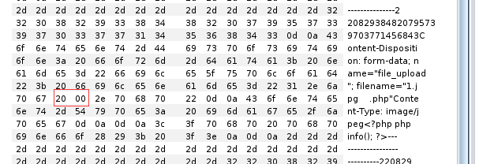

中间件解析漏洞配合文件上传
中间件解析漏洞+配合文件上传测试
IIS上传-解析
Apache上传-解析
Nginx上传-解析
IIS6.0
- 文件夹
image/qq.jpg
image.sap/qq.jpg qq.jpg 就会被当做asp解析
- 文件
image.jpg
image.asp;.jpg或xxx.asp;xxx.jpg 此文件会被当做asp执行
asp可以换成php 如果换了php就当php执行
apache
总结：
test.php.php123 是从右到左开始判断解析
addhandler php5-script.php test2.php.jpg
addtype application/x-httpd-php .jpg 即使拓展名是jpg，一样能以PHP方式执行
Apache解析漏洞
低版本漏洞
- apache 版本：2.x
- 解释
x.php.xxx.yyy
识别最后的yyy xxx，不能识别，则向前解析，直到识别。
利用场景：
如果对方中间件Apache是低版本，可以利用文件上传，上传一个不识别的文件后缀，利用解析漏洞规则成功解析文件，其中后门代码被触发。
Apache配置安全（Apache HTTPD 多后缀解析漏洞）
- 版本
该漏洞与Apache、php版本无关，属于用户配置不当造成的解析漏洞。
- 漏洞原理：
如果运维人员给.php后缀增加了处理器：
AddHandler application/x-httpd-php .php
那么，在有多个后缀的情况下，只要一个文件含有.php后缀的文件即将被识别成PHP文件，没必要是最后一个后缀。利用这个特性，将会造成一个可以绕过上传白名单的解析漏洞。
即：xxx.php.jpg会被当做php文件解析。
- 复现过程
启动环境
1 | cd /vulhub/httpd/apache_parsing_vulnerability |
访问ip:80端口
上传一个1.php文件，不能上传成功，抓包进行后缀修改：
利用该漏洞，添加.jpg后缀，成功上传：1.php.jpg：
访问1.php.jpg：发现代码以PHP形式进行解析：
Apache HTTPD 换行解析漏洞（CVE-2017-15715）
影响版本
2.4.0~2.4.29
原理
在解析PHP时，1.php\x0A 将被按照PHP后缀进行解析，导致绕过一些服务器的安全策略。
复现过程
正常上传PHP文件，发现不能上传成功：
在1.php后面插入一个\x0A（注意，不能是\x0D\x0A，只能是一个\x0A），不再拦截：

nginx
nginx解析漏洞复现
- 受影响版本
该漏洞与Nginx、php版本无关，属于用户配置不当造成的解析漏洞。
- 复现过程
在一个图片的末尾加上一句话木马：,制作成图片马：
对其进行上传，返回图片的路径：
访问路径正常解析图片，但是放进去的一句话木马没有执行。
因为存在相关解析漏洞，解析出现混乱，因此在后面添加1.php时，会把图片也当做PHP代码进行解析，出现乱码，而图片中的一句话木马也成功被解析了。
nginx文件名逻辑漏洞（CVE-2013-4547）
- 原理
其主要原因是错误地解析了请求的URI，错误地获取到用户请求的文件名，导致出现权限绕过、代码执行的连带影响。
- 影响版本
Nginx 0.8.41 ~ 1.4.3 / 1.5.0 ~ 1.5.7
- 成因
存在CVE-2013-4547的情况下，会将请求的1.gif[0x20][0x00].php，错误地以为请求的文件是1.gif[0x20]，因此将文件当做PHP代码解析。
具体可见：https://vulhub.org/#/environments/nginx/CVE-2013-4547/
- 复现过程
启动环境：
上传一个.jpg文件，内容为****
抓包进行修改：
在jpg后面啊添加空格发现也能成功上传，构造CVE-2013-4547解析漏洞，使用1.jpg[0x20][0x00].php，使1.jpg被当做PHP执行。
添加两个空格，修改hex值，使得：
[0x20][0x20]——>[0x20][0x00]

访问修改后的1.jpg .php:get方式传参，同样修改hex值为[0x20][0x00]，发包，发现代码被成功解析。
注意，[0x20]是空格，[0x00]是\0，这两个字符都不需要编码
漏洞防御：
设置security.limit_extensions = .php
升级Nginx